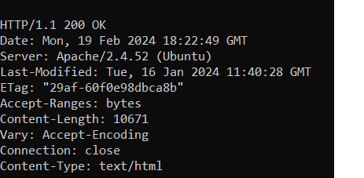
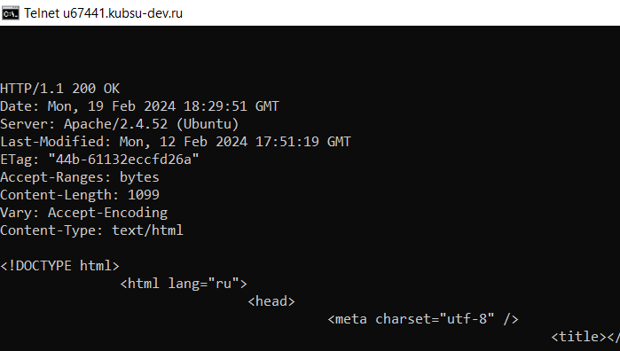
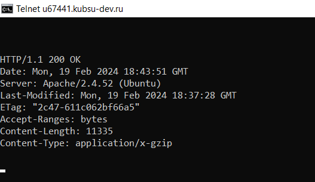
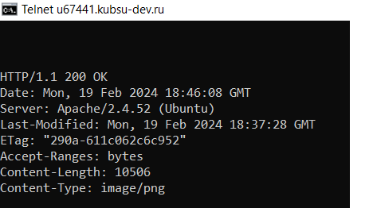
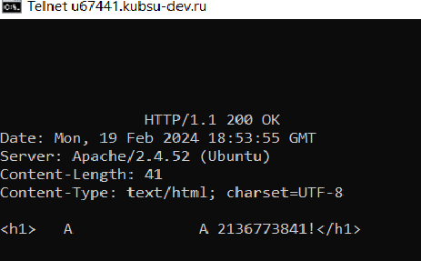
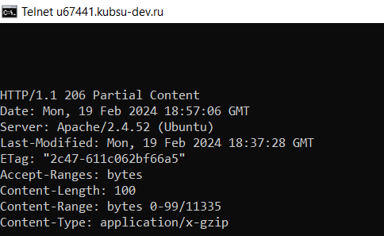
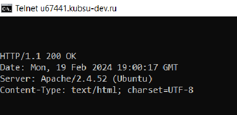

1.Получение главной страницы методом GET в протоколе HTTP 1.0

2. Получение внутренней страницы методом GET в протоколе HTTP 1.1

3. Определение размера файла file.tar.gz без скачивания его

4. Определение медиатипа ресурса /image.png

5. Отправка комментария на сервер по адресу /index.php

6. Получение первые 100 байт файла /file.tar.gz

7. Определение кодировки ресурса /index.php
